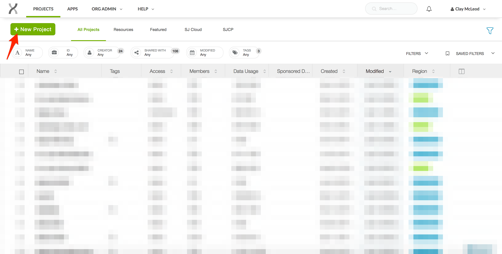

St. Jude Internal Employee Guide¶
Contents
The main difference between using SJCloud as an external user vs. a St. Jude employee is the way that you log into the system — St. Jude employees may log in with their St. Jude username and password, so they must visit a special webpage to authenticate. This process is extremely arbitrary, and we are in the process of making SJ authentication work through the main webpage.
Logging in with a St. Jude account¶
Navigate to https://cloud.stjude.org.
Enter your St. Jude username and password and click “Submit”.
After authenticating, your website address bar should read
https://platform.dnanexus.com/and look similar to the following image.
If done correctly, your name should be visible in the top right of the toolbar. You can now close this browser tab.
In a fresh browser tab, navigate to https://stjude.cloud.
Click on one of “Data”, “Tools”, or “Visualizations”, whichever you are interested in. In this example, I clicked on “Tools”.
If you were not already logged in, you should see a “User” button in the top right of the toolbar. Click this, then select “Log in with DNAnexus” from the menu.

You should be authenticated using account you entered in step #2 and automatically returned to the page you logged in from. If you have done this correctly, your name should appear in the top right of the screen.

Working with data from the Hartwell Center¶
All St. Jude employees who utilize the Hartwell Center may request that their data be sent to St. Jude Cloud so that you can perform analyses there. This process requires a one-time setup process by an administrator in your department. For information on the setup procedure, please search “Bioinformatics self-service” on the St. Jude intranet.
Once your lab has configured access on the cloud, you will have access to a project called
PIGROUP_inbox (ex: Dr. Zhang’s group would be zhanggrp_inbox). This is the project which
the Hartwell Center will drop off your lab’s data. Do not attempt to run analyses in
your Hartwell Center inbox project!. Instead, you will need to create a new project and copy
your Hartwell Center data over.
Creating a new project¶
Log-in at https://cloud.stjude.org.
Select “New Project” in the top left-hand corner.
Fill in the project information as described in the picture below, then click “Create”.

Copying data from inbox project¶
Select “Add Data” in the top left corner.

Click “Other Project”.

Click on your PI’s inbox.

Select the data you wish to copy over, then click “Add data” in the bottom left.
After a short delay, your data should appear in your newly created project!
Questions¶
With any other questions, please contact us at https://stjude.cloud/contact.